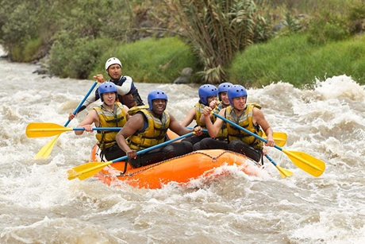
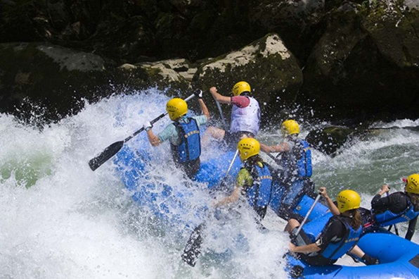
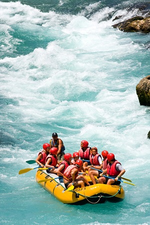
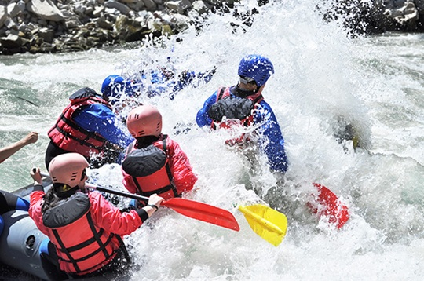
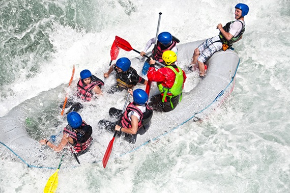
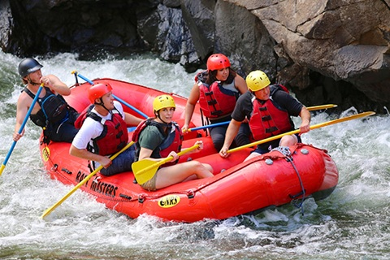

"Catch the Current, Chase the Thrill"


"Catch the Current, Chase the Thrill"
Fremer Water Rafting traces its inspiration from the long history of white-water rafting, an adventure activity that began as a practical way for people to travel and transport goods across rivers.

Over time, improved safety equipment and growing adventure tourism helped rafting spread worldwide as an exciting outdoor activity enjoyed for teamwork, exploration, and thrill-seeking.




